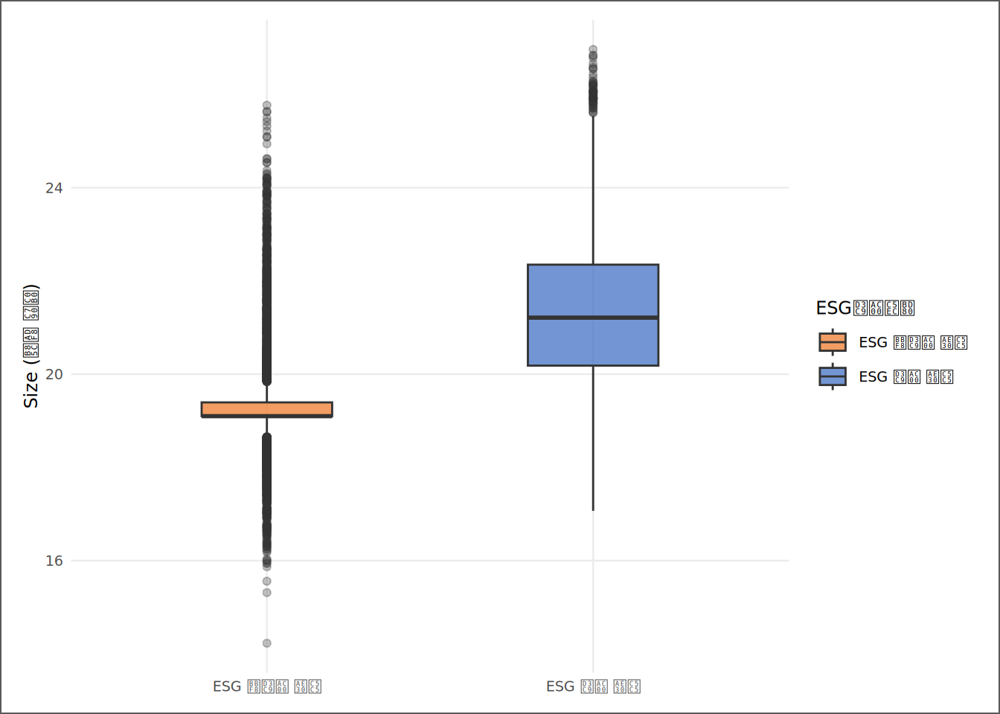
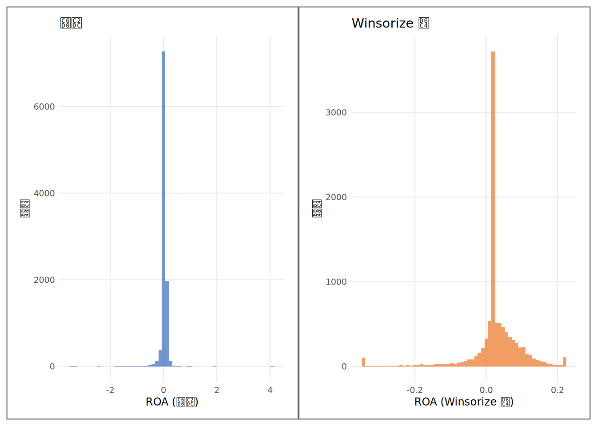

# | 키워드 | 한 줄 핵심 |
|---|---|---|
1 | 결측 진단 (Missing Diagnosis) | 결측이 있다는 사실보다 결측이 왜 생겼는지가 처리 방법을 결정한다 |
2 | MCAR / MAR / MNAR | 결측의 원인 유형 — 완전무작위·조건부무작위·비무작위 |
3 | 보호 변수 (Protected Variables) | 삭제해서는 안 되는 변수 — 파생변수의 분자·분모이거나 식별자 |
4 | Winsorize (압박붕대) | 극단값을 제거하지 않고 분위수 경계로 대체해 관측치를 보존한다 |
5 | 정제 결정 문서 (Cleaning Log) | 무엇을·어떻게·왜 처리했는지와 전후 N을 남기는 수술 기록 |
6 | 표본 편향 (Sample Bias) | 삭제가 특정 유형의 기업을 표본에서 몰아낼 때 생기는 체계적 왜곡 |
7 | 왜도 (Skewness) | 분포의 비대칭 정도 — Winsorize 효과를 확인하는 핵심 지표 |
더러운 데이터를 신뢰할 수 있는 데이터로 — 데이터 정제
“쓰레기를 넣으면 쓰레기가 나온다(Garbage In, Garbage Out). 분석은 데이터가 신뢰할 수 있을 때만 의미를 갖는다.”
사례로 시작하기
KG Asset 신입 분석가 김자산이 3장의 SSOT 파이프라인 산출물(Derived_SSOT_Dataset.csv)을 처음 열었을 때, 화면에 뜬 첫 번째 신호는 ESG등급 열이었다. 전체 10,000건의 기업-연도 관측치 중 5,953건의 ESG등급이 비어 있었다. 팀장의 반응은 빨랐다. “그냥 삭제하면 소형 기업만 표본에서 사라지잖아 — 결측을 삭제하기 전에 원인을 따져야 해.”
두 번째 신호는 ROA 분포였다. 최솟값이 눈을 의심하게 만들었다. “저 극단값들, 오류야, 진짜 기업이야? 오류라면 지워야 하고, 진짜 기업이라면 지우면 가장 흥미로운 케이스를 버리는 거야.”
이 장의 핵심은 진단과 기록이다. 어디가 비어 있는지, 그 빈칸의 원인이 무작위인지 체계적인지, 극단값이 오류인지 현실인지 — 이 세 질문에 답하기 전에 데이터를 건드려서는 안 된다. 수술이 끝나면 반드시 수술 기록지(정제 결정 문서)를 남긴다. 3장에서 구축한 SSOT가 재료라면, 이 장은 그 재료를 수술대에 올려 분석 가능한 형태로 다듬는 과정이다.
핵심 키워드
학습 목표
이 장을 마치면 다음 다섯 가지를 할 수 있다.
- 결측값을 MCAR·MAR·MNAR으로 분류하고 각 유형에 맞는 처리 전략을 선택한다.
- ESG등급 결측의 구조적 편향(MAR)을 실데이터로 검증하고
is_esg_rated더미로 전환한다. - 보호 변수를 명시하고 무처리 근거를 기록한다.
- ROA에 Winsorize(1%·99%)를 적용하고 전후 왜도를 비교해 처리 효과를 평가한다.
- 정제 결정 문서를 독자가 재현할 수 있는 수준으로 작성하고 표본 탈락률을 보고한다.
D→I→K→W 4단계 파이프라인
| 단계 | 이 장에서의 모습 |
|---|---|
| 데이터 (D) | 원시 SSOT — 10,000건의 기업-연도 패널(결측·극단값·불균형 분포 포함) |
| 정보 (I) | 결측 진단표 + ESG 구조성 검증 + Winsorize 전후 기술통계 |
| 지식 (K) | 결측이 MAR이면 삭제는 편향을 만든다 — 보호 변수와 Winsorize의 논리 |
| 지혜 (W) | 정제 결정 문서 한 장이 분석의 재현 가능성을 결정한다 |
데이터 출처와 수집
데이터 | 출처 | 핵심 변수 | 이 장의 역할 |
|---|---|---|---|
재무제표 패널 | DataGuide 5.0 (KOSPI·KOSDAQ 상장기업) | 자산총계, 부채총계, 당기순이익 | 보호 변수의 원천 — 삭제 시 파생변수 계산 불가 |
ESG 등급 | KCGS 등급 (DataGuide 제공) | ESG등급, is_esg_rated(평가 여부 더미) | 결측 구조 진단의 대상 — MAR 여부 검증 |
파생 변수 | 3장 SSOT 파이프라인 산출 | ROA, Size(log 자산), 부채비율, 부채비율_Win | Winsorize 전후 비교 및 정제 표본 확정 |
결측 진단 — 어디가 비어 있는가
# ① 주요 분석 변수의 결측 수 계산
na_diag <- tibble::tibble(
`변수` = c("ESG등급", "ROA", "Size", "부채비율",
"부채비율_Win", "ATO", "Female_Ratio"),
`결측 수` = c(
sum(is.na(ssot_raw$ESG등급)),
sum(is.na(ssot_raw$ROA)),
sum(is.na(ssot_raw$Size)),
sum(is.na(ssot_raw$부채비율)),
if ("부채비율_Win" %in% names(ssot_raw)) sum(is.na(ssot_raw$부채비율_Win)) else NA_integer_,
sum(is.na(ssot_raw$ATO)),
sum(is.na(ssot_raw$Female_Ratio))
)
) |>
dplyr::mutate(
`전체 관측치` = n_obs_total,
`결측률(%)` = round(`결측 수` / n_obs_total * 100, 1),
`결측 유형(가설)` = c("MAR", "MNAR(가설)", "MNAR(가설)", "MNAR(가설)", "MNAR(가설)", "MAR", "MAR")
) |>
dplyr::select(`변수`, `전체 관측치`, `결측 수`, `결측률(%)`, `결측 유형(가설)`)
ft_book(
flextable::set_caption(flextable::flextable(
na_diag |> dplyr::mutate(
`전체 관측치` = fcomma(`전체 관측치`),
`결측 수` = fcomma(`결측 수`)
)),
caption = "표 4.3 주요 변수 결측 진단표 — 비어 있는 이유가 처리 방법을 결정한다"),
num_j = 4, bold_j1 = TRUE
)변수 | 전체 관측치 | 결측 수 | 결측률(%) | 결측 유형(가설) |
|---|---|---|---|---|
ESG등급 | 10,000 | 5,953 | 59.5 | MAR |
ROA | 10,000 | 0 | 0.0 | MNAR(가설) |
Size | 10,000 | 0 | 0.0 | MNAR(가설) |
부채비율 | 10,000 | 0 | 0.0 | MNAR(가설) |
부채비율_Win | 10,000 | 0 | 0.0 | MNAR(가설) |
ATO | 10,000 | 0 | 0.0 | MAR |
Female_Ratio | 10,000 | 0 | 0.0 | MAR |
코드 읽기. is.na()는 해당 값이 NA이면 TRUE(1), 아니면 FALSE(0)를 반환한다. sum(is.na(x))는 그 TRUE들을 모두 더해 결측 수를 계산한다. 표에서 ESG등급 결측률이 높은 이유는 소형 기업일수록 ESG 평가를 받지 않기 때문이다 — 이 결측이 무작위인지 체계적인지를 다음 분석이 확인한다.
결측의 원인 유형에 따라 처리 방법이 달라진다. 결측이 완전히 무작위이면(MCAR) 단순 삭제가 가능하다. 결측이 다른 관측 변수와 연관되면(MAR) 삭제하면 체계적 편향이 생긴다. 결측이 결측값 자체와 연관되면(MNAR) 더 복잡한 처리가 필요하다. 세 유형의 차이가 처리 결정을 가른다.
유형 | 결측 원인 | 삭제의 위험 |
|---|---|---|
MCAR | 기업 데이터가 일부 연도에 전산 오류로 누락 | 낮음 — 무작위이므로 표본 편향이 작다 |
MAR | 소형 기업일수록 ESG등급이 없다 | 중간 — 삭제하면 관련 변수에서 편향 발생 가능 |
MNAR | 수익성이 극도로 낮은 기업이 공시를 회피 | 높음 — 삭제하면 표본이 체계적으로 왜곡된다 |
ESG 결측의 구조성 — MAR 진단
ESG등급의 결측이 MAR인지 확인하는 방법은 직접 물어보는 것이다. ESG 평가를 받지 않은 기업과 받은 기업의 규모가 다른가? 소형 기업일수록 ESG등급이 더 많이 빠져 있다면, 이 결측은 완전히 무작위가 아니다 — 규모라는 관측 변수와 결측이 연결되어 있으므로 MAR이다.
# ① ESG 평가 여부로 집단을 나누고 기업 규모(Size) 비교
esg_size_df <- ssot_raw |>
dplyr::filter(!is.na(Size)) |>
dplyr::mutate(
ESG평가여부 = dplyr::if_else(
!is.na(ESG등급), "ESG 평가 기업", "ESG 미평가 기업"
)
)
# ② 집단별 규모 요약
esg_size_sum <- esg_size_df |>
dplyr::group_by(ESG평가여부) |>
dplyr::summarise(
`기업-연도 수` = dplyr::n(),
`평균 Size` = mean(Size, na.rm = TRUE),
`중앙값 Size` = median(Size, na.rm = TRUE),
.groups = "drop"
)
# ③ 평균 규모 격차 (평가 기업 − 미평가 기업)
size_gap <- esg_size_sum$`평균 Size`[esg_size_sum$ESG평가여부 == "ESG 평가 기업"] -
esg_size_sum$`평균 Size`[esg_size_sum$ESG평가여부 == "ESG 미평가 기업"]코드 읽기. ①에서 dplyr::if_else(!is.na(ESG등급), "ESG 평가 기업", "ESG 미평가 기업")은 ESG등급 열에 값이 있는 행은 “ESG 평가 기업”, 없는 행은 “ESG 미평가 기업”으로 라벨링한다. !는 “아님”을 뜻하는 부정 연산자다. ②의 group_by() + summarise() 조합은 집단별로 요약 통계를 한 번에 계산한다 — group_by(ESG평가여부)가 데이터를 두 집단으로 가르고, summarise()가 각 집단 안에서 평균과 중앙값을 계산한다. ③은 두 집단의 평균 규모 차이를 숫자 하나로 뽑는 단계다 — 이 숫자의 부호와 크기가 MAR 진단의 핵심 증거다.
ESG평가여부 | 기업-연도 수 | 평균 Size | 중앙값 Size |
|---|---|---|---|
ESG 미평가 기업 | 5,953 | 19.326 | 19.100 |
ESG 평가 기업 | 4,047 | 21.368 | 21.213 |

ESG 평가 기업의 평균 로그 자산이 ESG 미평가 기업보다 2.04만큼 크다. 이 결측은 완전 무작위(MCAR)가 아니다 — 소형 기업일수록 ESG 평가를 받지 못하는 구조적 패턴이 있다(MAR). 따라서 ESG등급 결측 기업을 단순 삭제하면 남은 표본은 대형 기업에 편향된다. 10장에서 “ESG 평가 기업의 수익성이 더 높아 보이는” 이유의 절반은 이 구조에서 온다 — ESG 평가를 받은 기업 자체가 크고 안정적인 기업에 치우쳐 있기 때문이다.
보호 변수 — 무엇을 건드리지 않는가
외과 수술에서 신경과 주요 혈관은 가능한 한 건드리지 않는다. 잘못 잘라내면 환자가 더 위험해지기 때문이다. 데이터 정제에서도 함부로 삭제해서는 안 되는 변수가 있다. 이를 보호 변수라 부른다.
변수 | 보호 이유 | 잘못된 처리의 결과 |
|---|---|---|
자산총계(천원) | 파생변수(ROA, Size, 부채비율)의 분자·분모 — 삭제하면 파생변수도 사라진다 | 해당 기업-연도 전체가 표본에서 사라짐 |
부채총계(천원) | 부채비율의 분자 — 한 건 삭제가 레버리지 계산 전체를 무효화한다 | 부채비율 계산 불가 → 레버리지 통제 변수 손실 |
매출액(천원) | ATO의 분모 — 자산 효율성 비교의 기준 | ATO 계산 불가 → 자산 효율성 분석 불가 |
당기순이익(천원) | ROA의 분자이자 Loss_Dummy의 원천 — 손실 기업 정보를 담고 있다 | 적자 기업 정보 소실 → 부도 예측 분석 편향 |
코드 | 기업 식별자 — 없으면 패널 구조 자체가 붕괴된다 | 기업 클러스터링·패널 분석 불가 |
회계연도 | 시계열 식별자 — 없으면 연도 고정효과를 쓸 수 없다 | 연도 고정효과·시차 분석 불가 |
보호 변수의 반대가 정제 대상 변수다. ESG등급은 많이 빠져 있지만 보호 변수가 아니다 — 이 변수의 결측은 “해당 기업이 평가받지 않았다”는 정보 자체이기 때문에, 결측을 그대로 두고 is_esg_rated 더미(0/1)로 대체하는 것이 더 정직한 처리다. 3장에서 is_esg_rated가 만들어진 이유가 바로 이것이다. 결측을 평균·다중 대치로 메우지 않고 더미(is_esg_rated)와 삭제로 다루는 이유는, ESG 미평가가 무작위 결측이 아니라 기업 특성과 결부된 구조적 결측이기 때문이다 — 대치는 그 구조를 지운다.
극단값 수술 — Winsorize는 압박붕대다
직관 — 평균의 함정과 극단 기업
2장에서 배운 “평균의 함정”을 기억하는가. 한 명의 억만장자가 방에 들어오면 평균 자산이 급등한다. 재무 데이터에서는 이 문제가 더 극적이다. 자산을 10배로 부풀린 회계 오류 한 건, 또는 정말로 극단적인 수익성을 가진 기업 몇 곳이 전체 평균과 회귀계수를 끌고 간다.
그렇다면 극단값은 모두 오류인가? 아니다. 이것이 두 번째 핵심이다. 재무 데이터의 극단 기업은 실재한다. 자기자본을 모두 잠식한 기업은 부채비율이 수백 퍼센트가 된다. 특허 한 건으로 수익이 폭발한 바이오 기업은 ROA가 수십 퍼센트를 넘는다. 이들을 오류로 취급해 삭제하면 분석에서 가장 흥미로운 현상들이 사라진다.
그래서 극단값 처리의 두 방법을 구분해야 한다.
Trim (절단):
하위 p% · 상위 p% 관측치를 → 데이터셋에서 완전히 제거
(행 자체가 사라지므로 다른 변수 정보도 함께 손실)
Winsorize (압박붕대):
하위 p분위수보다 작은 값을 → p분위수 값으로 대체
상위 (1-p)분위수보다 큰 값을 → (1-p)분위수 값으로 대체
(관측치는 남기되, 극단값만 분위수 경계로 고정)Trim은 절단이다. Winsorize는 압박붕대다. 절단하면 그 기업의 다른 변수(Size, Loss_Dummy, Female_Ratio)도 함께 사라진다 — 표본이 줄고 정보가 손실된다. 압박붕대는 극단값만 분위수 경계로 고정하고 기업은 분석에 남긴다. 재무 연구에서 Winsorize가 표준인 이유다.
수식
변수 X에 대해 하위 p%, 상위 (1−p)%에서 Winsorize를 적용하면:
X_win = q_p if X < q_p
X_win = X if q_p ≤ X ≤ q_(1-p)
X_win = q_(1-p) if X > q_(1-p)
q_p : X의 p번째 백분위수
q_(1-p) : X의 (1-p)번째 백분위수
재무 연구 관행: p = 0.01 (즉 1%·99% 분위수 경계)실증 — ROA의 극단값이 평균을 얼마나 끌고 가는가
# ① Winsorize 함수 정의 (1·99% 기본값)
winsorize <- function(x, probs = c(0.01, 0.99)) {
lo <- stats::quantile(x, probs[1], na.rm = TRUE)
hi <- stats::quantile(x, probs[2], na.rm = TRUE)
pmin(pmax(x, lo), hi)
}
# ② ROA에 Winsorize 적용 — 원본과 정제 후를 나란히 보존
roa_df <- ssot_raw |>
dplyr::filter(!is.na(ROA)) |>
dplyr::mutate(
ROA_원시 = ROA,
ROA_Win = winsorize(ROA)
)
# ③ 전후 기술통계 비교 (왜도 포함)
desc_stats <- function(x, label) {
tibble::tibble(
구분 = label,
평균 = mean(x, na.rm = TRUE),
중앙값 = median(x, na.rm = TRUE),
표준편차 = sd(x, na.rm = TRUE),
최솟값 = min(x, na.rm = TRUE),
최댓값 = max(x, na.rm = TRUE),
왜도 = skewness_fun(x)
)
}
roa_stats <- dplyr::bind_rows(
desc_stats(roa_df$ROA_원시, "원시 ROA"),
desc_stats(roa_df$ROA_Win, "Winsorize 후")
)코드 읽기. ①은 Winsorize 함수를 직접 만드는 장면이다. stats::quantile()이 분위수를 계산하고, pmax(x, lo)가 하한 아래의 값을 lo로 올리며, 그 결과에 pmin(..., hi)가 상한 위의 값을 hi로 내린다 — 두 번의 경계 적용이 수식을 그대로 구현한 것이다. ②에서 mutate()는 원시 ROA를 그대로 보존하면서(ROA_원시) Winsorize된 버전을 새 열로 추가한다(ROA_Win) — 원본을 덮어쓰지 않는 것이 정제의 원칙이다. ③의 desc_stats()는 한 번 만든 함수를 원시·정제 후에 각각 호출해 두 행의 비교 표를 만든다. skewness_fun()은 왜도를 계산하는 함수로, setup에서 직접 정의했다 — 왜도가 0에 가까울수록 좌우 대칭, 양수면 오른쪽 꼬리가 긴 분포다.
구분 | 평균 | 중앙값 | 표준편차 | 최솟값 | 최댓값 | 왜도 |
|---|---|---|---|---|---|---|
원시 ROA | 0.0249 | 0.0221 | 0.1291 | -3.4627 | 4.0762 | -5.2145 |
Winsorize 후 | 0.0272 | 0.0221 | 0.0737 | -0.3429 | 0.2206 | -1.8343 |

표 4.7과 그림 4.2가 이 장의 두 번째 심장이다. Winsorize 후 ROA 평균은 0.0249에서 0.0272으로 올라갔다. 왜도는 -5.21에서 -1.83으로 줄어들었다 — 극단값이 분포의 꼬리를 잡아당기던 힘이 압박붕대로 눌렸다. 그림 4.2의 왼쪽 히스토그램에서 극단적으로 긴 꼬리가 오른쪽과 왼쪽에 뻗어 있고, 오른쪽 히스토그램에서 분포가 그 꼬리를 잘라낸 모양이 아니라 경계로 밀어 넣은 모양임을 눈으로 확인할 수 있다 — Winsorize의 시각적 특징이다. 데이터셋에는 부채비율_Win이 이미 존재한다 — 같은 Winsorize 절차가 레버리지 변수에도 적용된 결과다. 10장에서 회귀의 재료로 쓰이는 레버리지 변수가 바로 부채비율_Win이다.
분위수 경계의 선택
Winsorize의 분위수 경계(1%·5%·10%)는 고정된 법칙이 아니다. 재무 연구에서 1%·99%가 관행인 이유는 이 수준에서 대부분의 측정 오류와 진짜 극단 기업이 공존하기 때문이다. 5%로 높이면 진짜 극단 기업까지 눌러버리고, 0.1%로 낮추면 오류를 충분히 제거하지 못한다. 분위수 경계는 분석 목적에 따라 정당화되어야 하며, 다른 경계로 분석을 반복했을 때 결과가 크게 달라지면 강건성을 의심해야 한다. 정제 결정 문서에 분위수 선택의 근거를 적는 것이 재현 가능성의 전부다.
정제 결정의 문서화 — 기록 없는 수술은 의료사고
외과 수술이 끝나면 의사는 수술 기록지를 남긴다. 어디를 절개하고, 무엇을 제거하고, 어떻게 봉합했는지. 이 기록이 없으면 다음 의사가 처치를 이어받을 수 없고, 문제가 생겼을 때 원인을 추적할 수 없다. 데이터 정제에서 수술 기록지가 정제 결정 문서다. 이 문서는 세 가지 질문에 답해야 한다: (1) 무엇을 어떻게 처리했는가, (2) 왜 그렇게 결정했는가, (3) 처리 전후 관측치 수는 어떻게 변했는가.
변수·처리 | 처리 방법 | 근거 |
|---|---|---|
ESG등급 결측 | is_esg_rated 더미(0/1)로 대체 — 결측을 정보로 전환 | ESG 미평가는 오류가 아니라 상태; 삭제하면 소형기업 편향(MAR) |
ROA Winsorize | 1·99% 분위수 경계 적용 (ROA_Win 생성, 원본 보존) | 재무 연구 관행; 측정 오류와 진짜 극단기업을 보수적으로 처리 |
부채비율 Winsorize | 1·99% 분위수 경계 적용 (부채비율_Win, 데이터셋에 존재) | 동일 원칙; 자기자본 잠식 기업의 극단적 부채비율 처리 |
보호 변수 | 무처리 — 결측행은 분석 변수별 drop_na()로 분리 관리 | 파생변수 원천 — 삭제 시 ROA·Size·ATO 계산 불가 |
분석 표본 확정 | 분석 변수에 따라 표본이 달라짐 — 각 분석에 N 명시 | 결측 구조 보존; 분석 목적별 표본을 투명하게 명시 |
정제 후 분석 표본은 10,000건(667개 기업)이다. 원시 표본 10,000건 대비 0건이 핵심 분석 변수(ROA·Size·부채비율_Win)의 결측으로 제외되었다. 탈락률 0.00%로 낮아 표본 대표성 훼손이 작다. 이 숫자를 정제 결정 문서에 기록하는 것이 마지막 봉합이다 — 어떤 관측치가 왜 사라졌는지 독자가 추적할 수 있어야 재현 가능한 분석이다.
정제된 표본(ch04_clean_sample.csv)은 5장 피처 엔지니어링의 입력 재료가 된다. 깨끗해진 재료로 의미 있는 변수를 빚는 작업이 다음 장이다. 그리고 지금 이 장에서 정제한 ROA_Win과 부채비율_Win은 10장 회귀분석에서 종속변수와 통제변수로 직접 쓰인다 — 수술이 잘 됐는지 여부가 회귀계수의 신뢰성을 결정한다.
이후 장들은 ch04_clean_sample.csv를 직접 소비하는 대신, 각 장에서 동일 규칙(부채비율_Win 등)을 원본 SSOT에 직접 적용한다 — 정제 규칙이 SSOT의 일부이기 때문이다. 이 장이 확립한 처리 기준(Winsorize 경계·보호 변수·MAR 대응)은 전 장에 걸쳐 반복 적용되는 실증 관행의 원형이며, 각 장의 setup 코드가 그 규칙을 재현한다.
분석가의 번역 — 정제 수치를 의사결정 언어로
정제 결과를 숫자로 보고하는 분석가와, 그 숫자를 판단 언어로 바꾸는 분석가는 다르다.
숫자 | 통계적 해석 | 실무 번역 |
|---|---|---|
ESG등급 결측률 59.53% | ESG등급 관측치 중 결측 비중 | ESG 분석은 전체 기업이 아니라 평가된 기업의 이야기임을 명시해야 한다 |
ESG 규모 격차 2.04 | ESG 평가·미평가 기업의 로그 자산 차이 | ESG 평가 기업을 전체 상장사의 대표로 인용하면 안 된다 — 대형 편향 명시 필수 |
ROA 왜도 원시 -5.21 | 원시 ROA 분포의 비대칭 정도 | 극단 기업 몇 곳이 평균을 끌고 있다 — Winsorize 적용 전 평균 인용 금지 |
ROA 왜도 정제 후 -1.83 | Winsorize 후 ROA 분포의 비대칭 정도 | Winsorize가 극단값 영향을 줄였다 — 정제 효과 확인됨 |
표본 탈락률 0.00% | 핵심 변수 결측으로 제외된 관측치 비중 | 탈락률이 낮아 표본 대표성 훼손이 작다 |
R로 직접 해보기
| IPO | 내용 |
|---|---|
| Input | In_class_R/11주차/Derived_SSOT_Dataset.csv (3장 SSOT 파이프라인 산출) |
| Process | 결측 진단표 → ESG 구조성 검증(표 4.5) → 보호 변수 확인 → ROA Winsorize(전후 기술통계·히스토그램) → 정제 결정 문서 |
| Output | Output/ch04_clean_sample.csv (5장 피처 엔지니어링 입력 — 6장 이후 각 장은 원본 SSOT에 동일 규칙 직접 적용) |
| Report | 정제 결정 문서 1쪽 (표 4.8 형식) |
난이도 | 분석 아이디어 | 확인 포인트 |
|---|---|---|
초심자 | 부채비율 vs 부채비율_Win의 기술통계를 비교하고, 가장 크게 눌린 관측치의 기업이 어떤 기업인지 확인한다 | 가장 크게 눌린 기업이 측정 오류인가, 진짜 극단 기업인가 |
초심자 | Size를 기준으로 상위·하위 30%를 나눠 ESG 결측률을 비교한다 — MAR 진단을 직접 수행한다 | 소형 기업의 ESG 결측률이 대형보다 유의미하게 높은가 |
초심자 | Winsorize 분위수를 1%·5%로 바꿔 ROA 평균이 어떻게 달라지는지 비교한다 (강건성 점검) | 1%와 5%의 결과가 얼마나 다른가 — 분석이 경계 선택에 민감한가 |
고급자 | Female_Ratio의 결측 패턴을 ESG등급과 같은 방식으로 분석하고, MAR·MNAR 여부를 판단한다 | Female_Ratio 결측 구조가 ESG 결측과 유사한가 다른가 |
고급자 | ATO(자산회전율)에 대해 결측 진단→Winsorize→왜도 비교를 end-to-end로 반복한다 | ATO의 왜도 개선 폭이 ROA보다 큰가 작은가 — 이유를 한 문장으로 |
AI 협업 프로토콜 — 처방을 받지 말고, 수술 계획을 같이 짜라
수준 | 이 장의 행동 |
|---|---|
L1 (인식) | AI에게 '결측값 처리 코드를 짜줘'라고 묻고, 나온 코드를 그대로 실행한다 |
L2 (적용) | 변수 목록과 NA 비율을 보여주고 '각 변수에 맞는 처리 방법을 추천해줘'라고 요청한다 |
L3 (분석) | AI에게 'ESG등급 결측이 MAR이라면 단순 삭제 시 표본에 어떤 편향이 생기는지 두 가지 근거와 함께 설명해줘'라고 요구한 뒤, 표 4.5로 직접 검증한다 |
L4 (창의) | AI와 함께 Winsorize 경계를 1%로 정한 근거를 방어하는 메모 초안을 작성하고, 비판 가능한 약점 두 가지도 함께 도출한 뒤 정제 결정 문서에 반영한다 |
AI 협업 워크플로는 두 개의 프롬프트로 충분하다. 그대로 복사해 쓰라.
[프롬프트 1 — 정제 전: 결측 구조 가설 수립] “재무 패널 데이터에서 ESG등급 결측이 MAR이 될 수 있는 시나리오 세 가지와, MNAR이 될 수 있는 시나리오 두 가지를 각각 근거와 함께 제시해줘. 각 시나리오에서 결측 삭제가 만드는 편향의 방향도 예측해줘.”
[프롬프트 2 — 정제 후: 결정 문서 검증] “다음 정제 결정 문서의 논리를 검토하고, (1) 보호 변수 선정의 논리적 빈틈, (2) Winsorize 경계 선택에 대한 잠재적 비판, (3) 문서에 추가해야 할 항목을 각각 한 가지씩 지적해줘.” AI의 지적을 그대로 수용하지 마라 — 지적이 타당한지 데이터로 검증하고, 타당하면 정제 결정 문서를 수정하고, 타당하지 않으면 반론 논리를 메모의 한계 절에 추가하라.
| AI에게 맡겨도 되는 일 | 사람이 반드시 판단해야 하는 일 |
|---|---|
| 결측 처리 코드 초안 생성 | 이 변수가 보호 변수인지 여부 |
| Winsorize 분위수별 기술통계 자동화 | 결측이 MAR·MNAR인지의 판단 |
| 정제 결정 문서 초안 작성 | 분위수 경계 선택의 근거 |
| 왜도·첨도 해석 초안 | 표본 탈락이 만드는 편향의 방향 |
| 코드 오류 진단 | 최종 정제 기준과 그 문서화 |
정리, 함정, 다음 장
수술이 끝났다. 이 장의 수술 기록을 한 문장으로 줄이면 이렇다. 정제는 데이터를 깨끗하게 만드는 작업이 아니라, 데이터를 투명하게 만드는 작업이다. 어떤 결측이 있는지, 그 결측이 왜 생겼는지, 극단값을 어떻게 다뤘는지 — 이 세 가지를 기록할 수 있는 분석만이 재현 가능하고, 재현 가능한 분석만이 신뢰를 얻는다.
많은 분석가들이 빠지는 함정 세 가지를 기억하라.
결측 삭제가 만드는 표본 편향.
drop_na()한 줄이 소형 기업·적자 기업·ESG 미평가 기업을 표본에서 몰아낼 수 있다. 삭제 이후 표본이 누구를 대표하는지 반드시 물어야 한다. MAR 구조에서 삭제한 분석은 보이지 않는 곳에서 이미 편향되어 있다.극단값 = 오류라는 착각. 자기자본을 모두 잠식한 부채비율 수백 퍼센트, 특허 일시 반영으로 ROA가 치솟은 기업 — 이것들은 오류가 아니라 현실이다. 극단값을 삭제하면 가장 흥미로운 기업들이 분석에서 사라진다. Winsorize는 그 기업들을 남기면서 극단값의 분포 왜곡만 누르는 압박붕대다.
정제 기준 미문서화 = 재현 불능. “이상한 값을 지웠다”는 설명으로는 다른 연구자가 같은 결과를 재현할 수 없다. Winsorize 분위수, 결측 처리 방법, 표본 탈락 기준이 명시되지 않은 분석은 블랙박스다. 블랙박스는 신뢰받지 못한다.
점검 항목 | 통과 기준 |
|---|---|
변수별 NA 비율 진단표를 작성하고 결측 패턴을 확인했는가 | 표 4.3 형식 제시 |
결측이 MCAR·MAR·MNAR 중 어느 유형인지 근거와 함께 판단했는가 | 유형 판단 근거 1문장 이상 |
보호 변수를 명시하고 무처리 근거를 기록했는가 | 보호 변수 목록 + 삭제 시 결과 명시 |
Winsorize 분위수를 명시하고 전후 왜도를 비교했는가 | 분위수 명시 + 그림 4.2 형식 히스토그램 |
정제 후 표본의 관측치 수와 탈락 비율을 보고했는가 | 정제 전·후 N 나란히 보고 |
정제 결정 문서가 독자가 재현할 수 있을 수준으로 작성되었는가 | 표 4.8 형식 완성 |
분야 | 같은 구조의 질문 |
|---|---|
마케팅 분석 | 설문 미응답자가 불만족 고객일 가능성이 높다 — 응답 결측이 MNAR이면 삭제로 만족도가 과대 측정된다 |
인사 분석 | 퇴사자의 인사 평가 기록이 재직자보다 적다 — 삭제하면 성과 분석이 재직자 편향이 된다 |
의료 통계 | 중증 환자일수록 검사를 받지 못한다 — 결측이 MNAR이면 삭제로 생존 분석이 왜곡된다 |
신용 리스크 | 부도 기업의 재무 공시가 부도 직전에 빠진다 — 결측 자체가 부도 신호다 |
공공 정책 | 지원을 받지 못한 집단의 데이터가 적다 — 정책 효과 분석에서 무처치 집단 편향이 생긴다 |
이 장의 정제된 표본(ch04_clean_sample.csv)은 13장 최종 보고서의 “데이터 신뢰성” 절에 직접 들어가는 부품이다. 그리고 정제 결정 문서에 남은 미해결 질문 — “1%가 아닌 경계로 바꾸면 결론이 달라지는가?” — 는 강건성 분석의 씨앗이 되어 12장 연구 설계에서 싹을 틔운다.
주차 PBL — 수술 기록지를 써라
이 장의 기술을 새로운 변수에 적용하는 것이 이번 주의 PBL이다. 본문에서는 ROA와 ESG등급의 정제를 직접 수행했다 — PBL에서는 Female_Ratio(여성 고용 비율)와 ATO(자산회전율)를 수술대에 올린다.
Context. KG Asset 팀장이 새 분석 요청을 가져왔다. “다음 달 여성 이사회 비율 ESG 이벤트 분석에서 Female_Ratio와 ATO를 쓸 건데 — 이 두 변수, 지금 상태로 써도 되나? 결측 구조 확인하고, Winsorize 할지 판단하고, 이유를 문서화해서 가져와. 내가 추적할 수 있게.”
| 단계 | 미션 | 핵심 |
|---|---|---|
| Level 1 (필수) | 결측 진단표 | Female_Ratio·ATO의 NA율 계산, 유형 판단(MCAR·MAR·MNAR 중 하나 + 근거 1문장) |
| Level 2 (심화) | Winsorize 전후 비교 | 두 변수 각각에 Winsorize(1%) 적용, 전후 왜도·평균·최대·최소 비교표 + 히스토그램 |
| Level 3 (확장) | 정제 결정 문서 | 표 4.8 형식 — 무엇을(변수), 어떻게(방법), 왜(근거), 전후 N 명시 |
제출물은 과목 표준 4종 — Input(데이터), Script(프롬프트 로그 포함 코드), Output(결과 표·그림), Report(정제 결정 문서). 본문 코드(Script/ch04_cleaning.R)에서 변수명만 교체하면 Level 1·2가 거의 완성되는 구조다 — 진짜 승부는 결정 문서의 논리에서 갈린다.
수행 가이드라인 (모범답안이 아니라 사고의 이정표다).
- NA 비율을 계산하고 끝내면 하수다. 그 결측이 누구에게 집중되어 있는지(규모·연도별 NA율 비교)까지 가야 진단이다.
- Winsorize를 적용하고 히스토그램을 그리면 중수다. “왜도가 줄었다”를 “이 변수를 평균으로 쓸 때의 왜곡 위험이 줄었다”로 번역하면 고수다.
- 정제 결정 문서에 근거 없이 “1% Winsorize 적용”만 쓰면 불합격이다. “ATO 분포를 확인하니 상위 1%에 특수 업종 관측치가 집중되어 있어 1% 경계가 적절하다” 수준의 추론이 합격이다.
- Level 3 정제 결정 문서는 팀장이 읽는 내부 메모다 — 통계 용어 대신 비즈니스 언어로 썼는지 점검하라.
- 자기 점검 질문: 내가 만든 정제 결정 문서를 바탕으로, 처음 데이터를 본 동료가 같은 분석을 재현할 수 있는가?
채점 루브릭 (100점).
| 평가 항목 | 배점 | 통과 기준 |
|---|---|---|
| 재현성 | 20 | 데이터 경로·스크립트·패키지·표본 수가 명시되어 그대로 재실행 가능 |
| 결측 진단의 질 | 30 | 두 변수의 NA율 + 유형 판단(MAR·MNAR 등) + 구조성 검증(규모나 다른 변수와의 관계 1개 이상) |
| Winsorize 분석 | 25 | 전후 왜도·평균·최대 비교표 + 히스토그램 2매 + 왜도 개선 여부 해석 1문장 |
| 정제 결정 문서 | 25 | 무엇·어떻게·왜·전후 N 4항목 모두 포함, 재현 가능 수준으로 작성 |
이 장의 자료
- 데이터:
In_class_R/11주차/Derived_SSOT_Dataset.csv(3장 SSOT 파이프라인 산출) - 전체 스크립트:
Script/ch04_cleaning.R(본문 코드 전체 — Script 폴더에서 실행) - 산출물:
Output/ch04_clean_sample.csv(정제된 분석 표본 — 5~13장 공용)
AI 협업 권장. 코드를 실행하다 막히면 오류 메시지와 함께 “어느 줄·어느 패키지의 문제인지 구분해 진단해줘”라고 요청하라. 개념이 막히면 “MNAR을 의료 통계 말고 재무 데이터로 비유해서 설명해줘”처럼 다른 비유를 요구하라.
AI 사용 시 주의 3가지. (1) AI가 만든 정제 코드에는 보호 변수를 삭제하는 실수가 섞일 수 있다 — 코드를 실행하기 전에 어떤 변수가 제거되는지 확인하라. (2) AI의 “이상치 처리” 권장은 대부분 Trim(삭제)이다 — 왜 Winsorize를 쓰는지 알고 수정 지시를 내려라. (3) AI는 결측 유형을 데이터 없이 추측한다 — AI의 판단은 가설이고, 최종 판단은 그림 4.1과 표 4.5의 실증이다.
연습문제
문제 1. 어떤 분석가가 ESG등급의 결측 관측치를 drop_na(ESG등급)으로 모두 삭제한 뒤 “ESG 평가 기업의 평균 ROA는 X%다”라고 보고했다. 이 보고의 어떤 점이 문제인가? 결측 유형(MCAR·MAR·MNAR)을 활용해 설명하고, 올바른 처리 방법을 제안하라.
모범답안. ESG등급 결측은 소형 기업·공시 여력이 적은 기업에 집중될 가능성이 높으므로 MAR에 해당한다 — 결측이 규모라는 관측 변수와 연결되어 있다. 이 경우 drop_na(ESG등급)은 소형 기업을 표본에서 제거하고, 남은 표본은 대형 기업에 편향된다. 보고의 핵심 문제는 “ESG 평가 기업의 평균 ROA”라는 표현이 이 편향을 숨긴다는 것이다. 올바른 처리: (1) 결측을 is_esg_rated = 0으로 코딩해 표본을 유지하고, (2) “전체 상장사 중 ESG 평가를 받은 기업 기준”임을 명시하며, (3) ESG 평가 기업과 ESG 미평가 기업의 규모를 표 4.5 형식으로 제시해 편향 여부를 독자가 판단할 수 있게 한다.
문제 2. Winsorize(1·99%)를 적용한 뒤 부채비율의 최댓값이 500%에서 200%로 줄었다. 이 처리가 만드는 장점 두 가지와 잠재적 단점 한 가지를 설명하라.
모범답안. 장점 ①: 자기자본 잠식 기업 몇 곳이 전체 평균과 회귀계수를 끌어올리는 왜곡이 줄어든다. 장점 ②: 관측치가 제거되지 않으므로(Trim과 달리) 표본 크기와 기업 구성이 유지되어, 해당 기업의 다른 변수(Size, ROA, Loss_Dummy) 정보를 분석에 계속 활용할 수 있다. 단점: 부채비율이 200%를 초과하는 기업들이 모두 200%로 처리되어, 재무 위기 수준이 다른 기업들이 같은 값을 갖게 된다 — 극단적 레버리지와 보통 레버리지의 차이가 지워진다. 따라서 자본 잠식 기업의 극단적 레버리지 자체가 연구 관심사라면 Winsorize 경계를 높이거나 두 집단을 분리해 분석해야 한다.
문제 3. 다음 두 코드는 어떻게 다른가? 재무 데이터 분석에서 어느 쪽이 더 적합하며, 그 이유는?
# 방법 A: 결측 행 완전 제거
df_a <- ssot_raw |> tidyr::drop_na(ROA)
# 방법 B: Winsorize 적용 (결측은 유지)
winsorize <- function(x, probs = c(0.01, 0.99)) {
pmin(pmax(x, quantile(x, probs[1], na.rm = TRUE)),
quantile(x, probs[2], na.rm = TRUE))
}
df_b <- ssot_raw |> dplyr::mutate(ROA_Win = winsorize(ROA))모범답안. 방법 A는 ROA가 결측인 행을 완전히 제거한다 — 표본이 줄고 그 기업의 다른 변수(Size, 부채비율, ESG등급)도 함께 사라진다. 방법 B는 결측을 그대로 두고 극단값만 분위수 경계로 고정한다 — 표본 크기가 유지되고, 극단 기업의 다른 정보도 분석에 남는다. 재무 패널 분석에서는 표본 탈락이 특정 유형(극단적 부실 기업, 소형 기업)에 집중될 수 있으므로, B가 더 적합하다. 단, 방법 B는 결측 자체를 처리하지 않으므로, 결측 ROA를 포함하는 분석 함수에서는 na.rm = TRUE를 명시하거나 이후 단계에서 drop_na(ROA)를 별도로 적용해야 한다.
문제 4. 정제 결정 문서에 반드시 포함되어야 하는 항목을 아래에서 고르고, 각각 왜 필요한지 한 줄로 설명하라: (ㄱ) 정제 전 표본 크기, (ㄴ) Winsorize 분위수 경계, (ㄷ) 제거된 관측치의 기업 이름 목록, (ㄹ) 결측 처리 방법의 근거, (ㅁ) 분석에 사용한 R 패키지 버전.
모범답안. (ㄱ) 필수 — 탈락 비율을 계산하고 표본 대표성을 평가하는 기준점이다. (ㄴ) 필수 — 다른 분위수를 쓰면 결과가 달라질 수 있으므로 재현하려는 연구자가 반드시 알아야 한다. (ㄷ) 불필요 — 개별 기업 이름은 재현에 필요하지 않고, 분위수 경계와 변수 정의로 충분히 재현 가능하다(기업 이름 대신 “1%·99% 경계를 벗어난 관측치”로 기술한다). (ㄹ) 필수 — 처리 방법이 같아도 근거가 다르면 다른 기준을 적용한 것이다; 비판자가 처리의 자의성을 공격할 때 방어 논리가 된다. (ㅁ) 권장 — 패키지 버전에 따라 quantile() 계산 방식이 미세하게 달라질 수 있으므로, 완전한 재현을 위해 포함하는 것이 좋다.